9.1.8 ...的安装 折叠器 单元 CD2 
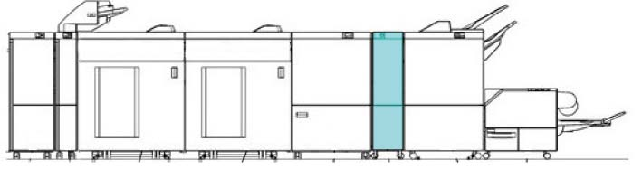
(图 1) ffw910012
产品代码
折叠器 单元 CD2
QD200142[Revoria 按下 PC1120, Revoria 按下 E1136G, Revoria 按下 EC1100, Revoria 按下 SC180G]
电源线（3脚）: EM100188 (FB), FBAP/WW (请参阅 6.2.6.1)
LD200164 (FB 设置 代码)
QD200096: 折叠器 单元 CD2
EM100188 (FB: 选件): 电源线（3脚）
LD200219 (FB 设置 代码) [Apeos C8180G, ApeosPro C810G, Revoria 按下 EC1100, Revoria 按下 SC180G]
QD200142: 折叠器 单元 CD2
EM100188 (FB: 选件): 电源线（3脚）
LM100085 (FB 设置 代码) [Apeos 7580G]
QD200142: 折叠器 单元 CD2
EM100188 (FB: 选件): 电源线（3脚）
安装步骤
关闭IOT主机和打印服务器, 拔掉电源.

用于 如何 to 关闭电源, 请参阅 the 维修 手册 用于 IOT 和 打印服务器.
检查随附物品.
折叠器 单元 随附物品 (图 2)
对接 板
Gasket 板 (2)
纸盘 Caster (2)
Thumb 螺钉（x2） 不是 used
Stopper 支架
旋钮 螺钉
卡纸 Label
NVM 列表
Sample 纸张 (3)
螺钉 (M4x7 : 2)
螺钉 (M4x8 : 2)
螺钉 (M4x6 : 2)
* 那里 是 编号 illustrations 用于 Items 7 to 12.
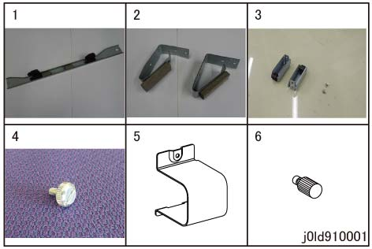
(图 2) ld910001
拆卸 packaging tape 和 packaging material 和 visually 检查 overall appearance. (图 3)
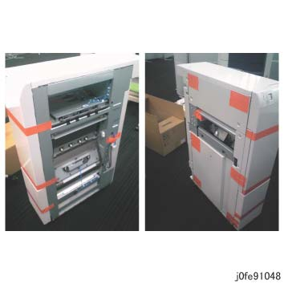
(图 3) fe91048
打开前盖板, 拆卸 packaging tape 和 packaging material 和 visually 检查 overall appearance. (图 4)
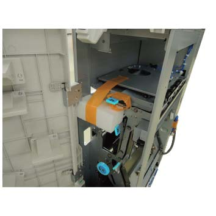
(图 4) ldw910001
安装 对接 板 to 折叠器 组件. (图 5)
固定 the 对接 板 by using 螺钉 (M4x7: x2).
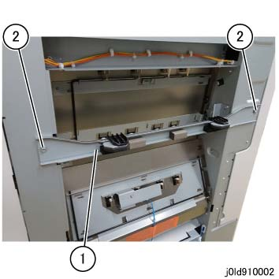
(图 5) ld910002
拉出 the ENV 纸盘. (图 6)
拉出 the ENV 纸盘.
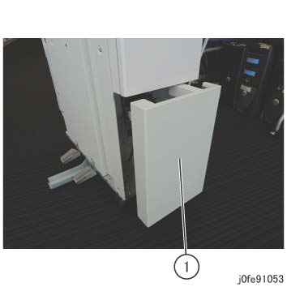
(图 6) fe91053
安装 堆叠器 纸盘 到 ENV 纸盘. (图 7)
固定 纸盘 Caster (x2) by using 螺钉 (M4x6).
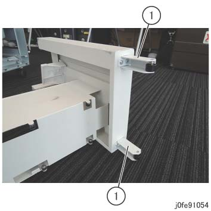
(图 7) fe91054
安装 Gasket 板 to 折叠器 组件. (图 8)
对齐 Gasket 板 (x2) 到 位置 marked D.
固定 the Gasket 板 (x2) by using 螺钉 (M4x8).

(图 8) ld910003
Paste the Cushion 在...上 侧面 F 盖板 of 折叠器 组件. (图 9)
Paste the Cushion by aligning it 使用 guideline.
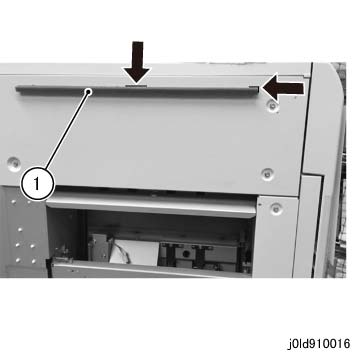
(图 9) ld910016
Temporarily 拆卸螺钉 哪个 secures the 对接 释放 杠杆 of 折叠器 组件. (图 10)
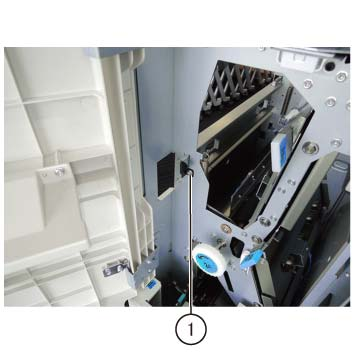
(图 10) ldw910002
Dock 折叠器 组件 到 上游 模块. (图 11)

(图 11) ld910017
拆卸 后面 连接器 盖板 of 折叠器 组件. (图 12)
拆卸螺钉 (x1).
拆卸 后面 连接器 盖板.
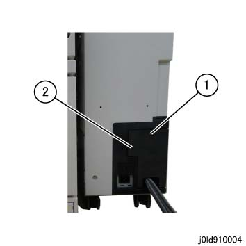
(图 12) ld910004
拆卸后盖板. (图 13)
释放 电缆 卡箍 (x2).
拆卸螺钉（x5）.
拆卸后盖板.
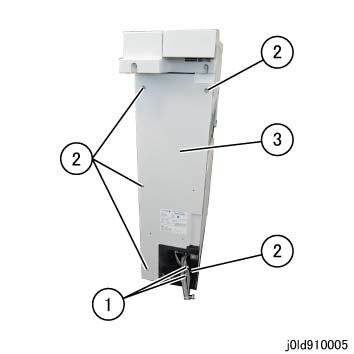
(图 13) ld910005
检查 折叠器 组件 高度, 和 the gap 和 alignment 的 上游 模块 和 折叠器 组件. (图 14)
The 顶部 和 底部 gaps 是 equal
The 高度 difference 之间 the 上游 模块 和 折叠器 组件 前面/后面 应 +/-2mm 和 电平.

(图 14) ld910018
执行 最大到 步骤 18 to 调整 折叠器 组件 高度, 和 the gap 和 alignment 的 上游 模块 和 折叠器 组件.
拉出 the ENV 纸盘. (图 15)
拉出 the ENV 纸盘.
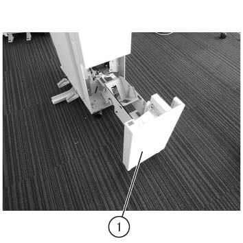
(图 15) ldw910003
Take 出 the Wrench. (图 16)
如果 Wrench 不是 provided, use the one 用于 the CDM or 装订器 D6.
拆卸螺钉 to take 出 the Wrench.
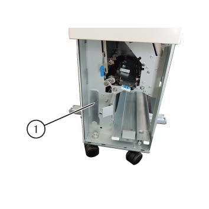
(图 16) ldw910004
当...时 using the Wrench, take 注意 of burrs at 框架.
调整 by rotating the Caster (x2) 在前面. (图 17)
旋转 the Caster (x2) to 调整.
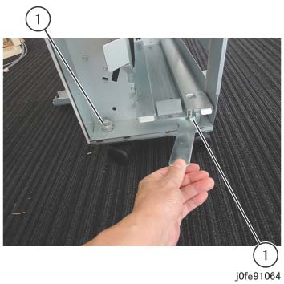
(图 17) fe91064
调整 by rotating the Caster (x2) 在后面. (图 18)
旋转 the Caster (x2) to 调整.
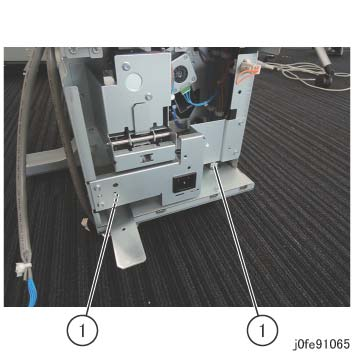
(图 18) fe91065
固定 the 对接 释放 杠杆. (图 19)
固定 it by using 螺钉.
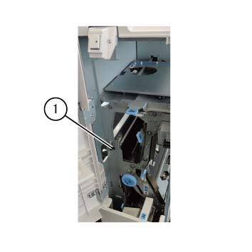
(图 19) ldw910005
Reinstall the 后面 盖板 of 折叠器 组件.
当...时 那里 is 编号 TCBM in 上游 (图 20)
Leave the Cheat 连接器 connected.
折叠器 不 功能 如果 Cheat 连接器 不是 connected.
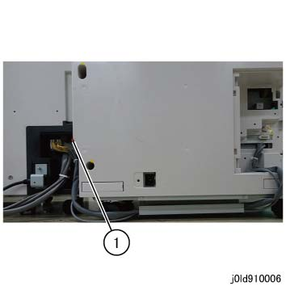
(图 20) ld910006
If 那里 is TCBM in the 上游, 连接 线束 to 折叠器 组件. (图 21)
断开 Cheat 连接器, 和 连接 TCBM 连接器 (x3).
Store the Cheat 连接器 内部 the Downstream 装订器.
固定 the 导线 by using the Snap Hook.
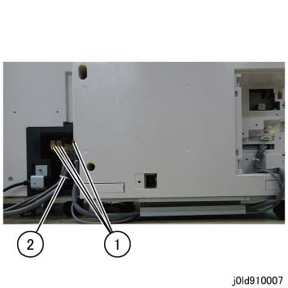
(图 21) ld910007
Temporarily 拆卸螺钉 该 secures the 对接 释放 杠杆 of 装订器 和 dock 装订器 to 折叠器 组件. (图 22)
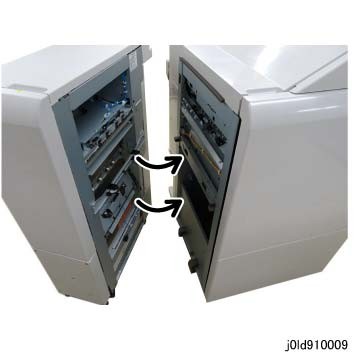
(图 22) ld910009
检查 装订器 高度, 和 the gap 和 alignment of 折叠器 组件 和 装订器. (图 23)
The 顶部 和 底部 gaps 是 equal
The 高度 difference 之间 the 上游 模块, 折叠器 组件 和 装订器 前面/后面 应 +/-2mm 和 电平.
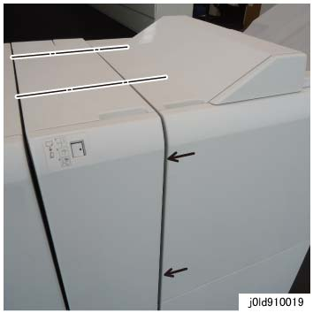
(图 23) ld910019
调整 装订器 高度, 和 the gap 和 alignment of 折叠器 组件 和 装订器.
打开前盖板.
Take 出 the attached spanner. (图 24)

(图 24) ffw910001
拆卸 底部 盖板 (x2) 的 后面 下方 盖板. (图 25)

(图 25) tc910008
Use the wrench to 松开 the Securing 螺母 的 前面 和 后面 Caster. (图 27, 图 28)
Use the wrench to 转动 [前面 (x2)]: Adjusting 螺栓 (图 27), [后面 (x2)]: Adjusting Hexagonal 螺栓 (图 28) 和 调整 高度.
Factory 默认: 64mm
转动 hexagonal 螺栓 using the provided wrench.

(图 26) ifm910011
如果 is difficult to work 使用 provided wrench, use the ratchet wrench.
如果 is difficult to work 在后面, 拆卸后下盖板.
Use the wrench to 拧紧 the Securing 螺母. (图 27, 图 28)

(图 27) ia90011

(图 28) ip910018
安装 底部 盖板 (x2) 的 后面 下方 盖板.
固定 the Latch Stopper by using 螺钉. (图 29)

(图 29) ffw910006
拆卸 后面 连接器 盖板 of 装订器. (图 30)
拆卸螺钉.
打开 盖板.

(图 30) ff910018
连接 线束 of 折叠器 组件 to 装订器. (图 31)
连接连接器 (x4) of 折叠器 组件.
固定 the 导线 by using the Snap Hook.
Store the Cheat 连接器, 哪个 已拆卸 at 折叠器 组件, 内部 the downstream 装订器.
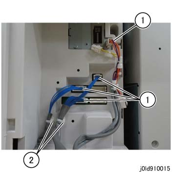
(图 31) ld910015
安装 bundled 卡纸 Label behind 装订器 前面 门. (图 32)
固定 it by using the 螺钉（x3）.
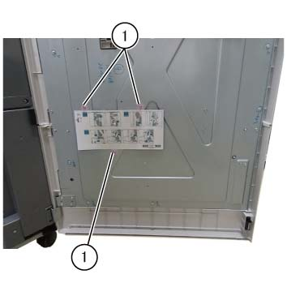
(图 32) ldw910006
连接电源线 to 折叠器 组件. (图 33)
连接电源线.
安装 Stopper 支架.
固定 it by using the 旋钮 螺钉.

(图 33) ld910012
连接电源线 to 装订器. (图 34)
连接电源线.
安装 Stopper 支架.
固定 it by using the 旋钮 螺钉.
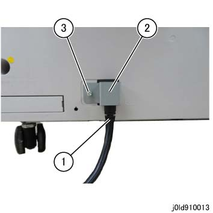
(图 34) ld910013
连接 装订器 电缆 到 CDM. (图 35)
连接 电缆.
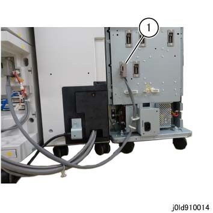
(图 35) ld910014
插头 每个 电源 插头 进入 电源 出口 和 打开 IOT 主 电源 开关.
打开电源 开关.
写入 折叠器 折叠 调整 值 (factory 默认) to 装订器.
输入 the CE 模式.
设置 值 的 NVM 763-034 to 1, 和 然后 关机 和 On.

当...时 电源 已开启 当...时 折叠器 已连接, 折叠器 折叠 调整 值 将 automatically be 读取 从 折叠器 PWB 子 CPU 和 written to 装订器 主电路板 CPU.
设置 默认 输出 destination (复印模式) 用于 装订器.
NVM : 790-183
4 : 顶部 纸盘
2 : 装订器 纸盘
检查 操作.
Explain 到 customer 如何使用.